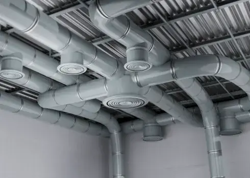

Vnitřní prostředí budov
Navrhujeme vzduchotechnické systémy pro efektivní větrání, klimatizaci a rekuperaci tepla. Zajišťujeme zdravé vnitřní prostředí, optimální distribuci vzduchu a výrazné snížení energetické náročnosti.

Systémy a aplikace
Jak pracujeme
Správně navržená vzduchotechnika zajišťuje čerstvý vzduch, pohodu a zdraví po celý rok.
Kontaktovat nás